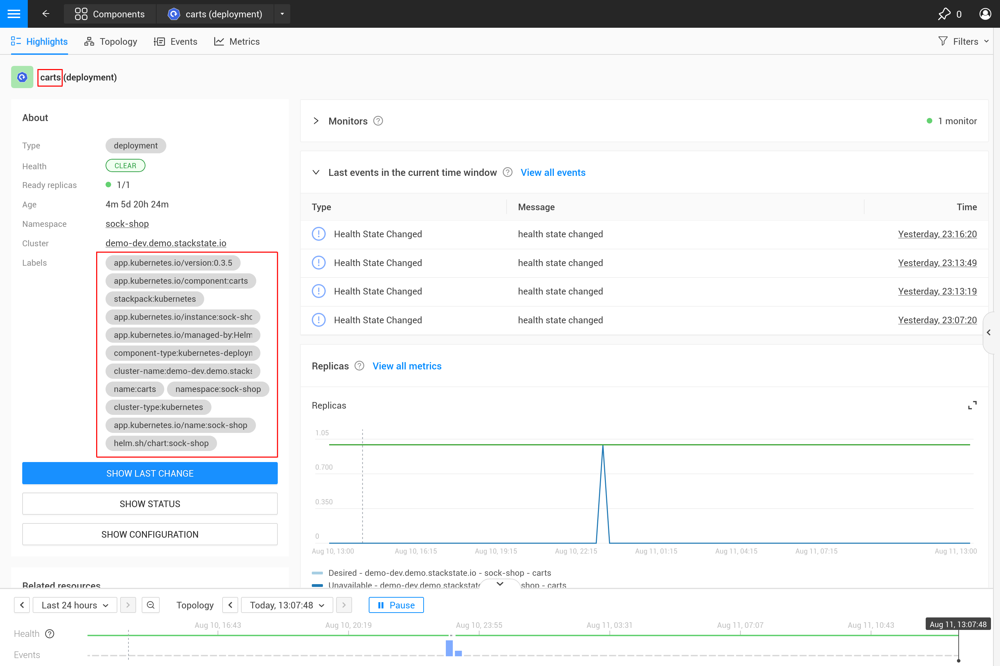

将自定义图表添加到组件
概述
SUSE® Observability 默认在大多数类型的组件上提供许多指标图表，这些组件代表 Kubernetes 资源。可以在需要时向任何组件集添加额外的指标图表。在向组件添加指标时，有两种选择：
-
这些指标已经被 SUSE® Observability 收集，但默认情况下未在组件上可视化。
-
这些指标尚未被 SUSE® Observability 收集，因此尚不可用。
对于选项 1，以下步骤将指导您如何创建指标绑定，以配置 SUSE® Observability 将特定指标添加到特定组件集。
对于选项 2，请确保通过使用 Prometheus 远程写入协议 将指标发送到 SUSE® Observability，以确保指标在 SUSE® Observability 中可用。在确保指标可用后，继续为组件添加指标图表。
创建指标绑定
作为示例，这些步骤将为 Kubernetes 部署的 Replica counts 添加指标绑定。此指标绑定在 SUSE® Observability 中默认已存在。
编写指标绑定的概要
在您最喜欢的代码编辑器中打开 metricbindings.yaml YAML 文件，以便在本指南中进行更改。 您可以使用 CLI 来 测试您的 StackPack。
- _type: MetricBinding
chartType: line
enabled: true
identifier: urn:stackpack:my-stackpack:shared:metric-binding:node-memory-bytes-available-scheduling
layout:
metricPerspective:
section: Resources
tab: Kubernetes Node
name: Memory available for scheduling (Custom)
priority: medium
queries:
- alias: ${cluster_name} - ${node}
expression: max_over_time(kubernetes_state_node_memory_allocatable{cluster_name="${tags.cluster-name}", node="${name}"}[${__interval}])
scope: (label = "stackpack:kubernetes" and type = "node")
unit: bytes(IEC)
查询和范围部分将在接下来的步骤中填写。请注意，使用的单位是`short`，这将简单地呈现一个数值。如果您还不确定度量的单位，可以保持开放状态，并在编写PromQL查询时决定正确的单位。
选择要绑定的组件
保存 拓扑视角 的视图，并使用过滤器（过滤器 → 拓扑 → 切换到 STQL）查询需要显示新指标的组件。用于度量绑定的拓扑选择中最常见的字段是`type`（组件类型）和`label`（选择所有标签）。例如，对于部署：
type = "deployment" and label = "stackpack:kubernetes"
类型过滤器选择所有部署，而标签过滤器仅选择由Kubernetes堆栈包创建的组件（标签名称为`stackpack`，标签值为`kubernetes`）。后者也可以省略，以获得相同的结果。 所有 STQL 查询组件过滤器 都可以用于过滤。
切换到高级模式以复制结果拓扑查询，并将其放入度量绑定的`scope`字段中。
|
指标绑定仅支持查询过滤器。像 |
编写PromQL查询
转到您的SUSE® Observability实例的度量探索器，http://your-instance/#/metrics,并使用它查询感兴趣的度量。探索器具有度量、标签、标签值的自动补全功能，还包括PromQL函数和运算符，以帮助您。从短时间范围开始，例如一小时，以获得最佳结果。
对于副本的总数，请使用 kubernetes_state_deployment_replicas 度量。要显示时间序列数据的指标图表，请扩展查询以使用`${__interval}`参数进行聚合：
max_over_time(kubernetes_state_deployment_replicas[${__interval}])
在这种特定情况下，使用`max_over_time`以确保图表始终显示任何给定时间的最高副本数。对于较长的时间范围，副本的短暂下降不会显示。要强调最低的副本数，请使用`min_over_time`。
将查询复制到度量绑定的`queries`字段中第一个条目的`expression`属性。使用`Total replicas`作为别名，以便在图表图例中显示。
|
在SUSE® Observability中，指标图表的大小会自动决定图表中显示的指标的粒度。可以调整 PromQL 查询，以最佳利用此行为，从而获得指标的代表性图表。撰写 PromQL 以用于图表详细解释了这一点。 |
将正确的时间序列绑定到每个组件。
所有字段填写完整的指标绑定：
_type: MetricBinding
chartType: line
enabled: true
tags: {}
unit: short
name: Replica counts
priority: MEDIUM
identifier: urn:stackpack:my-stackpack:metric-binding:my-deployment-replica-counts
queries:
- expression: max_over_time(kubernetes_state_deployment_replicas[${__interval}])
alias: Total replicas
scope: type = "deployment" and label = "stackpack:kubernetes"
在SUSE® Observability中创建它并查看部署组件上的"副本计数"图表会得到意外的结果。图表显示所有部署的副本计数。从逻辑上讲，人们会期望只有一个时间序列：该特定部署的副本计数。

要修复此问题，请使用组件的信息使 PromQL 查询针对特定组件。根据足够的指标标签进行过滤，以仅选择该组件的特定时间序列。这就是将正确的时间序列绑定到组件的 "绑定"。对于任何有经验制作 Grafana 仪表板的人来说，这类似于在仪表板上用于查询的带参数的仪表板。让我们将指标绑定中的查询更改为：
max_over_time(kubernetes_state_deployment_replicas{cluster_name="${tags.cluster-name}", namespace="${tags.namespace}", deployment="${name}"}[${__interval}])

现在 PromQL 查询根据三个标签进行过滤：cluster_name、namespace`和`deployment。而不是为这些标签指定实际值，而是使用对组件字段的变量引用。在这种情况下，使用标签 cluster-name 和 namespace，通过 ${tags.cluster-name} 和 ${tags.namespace} 引用。此外，组件名称通过`${name}`引用。
支持的变量引用包括：
-
任何组件标签，使用`${tags.<label-name>}`
-
组件名称，使用`${name}`

|
集群名称、名称空间以及组件类型和名称的组合通常足以从Kubernetes中选择特定组件的指标。这些标签或类似标签通常在大多数指标和组件上可用。 |
高级
图表中有超过一个时间序列。
|
指标绑定只有一个单元（它绘制在图表的y轴上）。因此，您应该仅将产生相同单元的时间序列的查询组合在一个指标绑定中。有时可能可以转换单元。例如，处理器使用率可能以毫核或核的形式报告，毫核可以通过乘以 1000 转换为核，如此 |
有两种方法可以在单个指标绑定中获取超过一个时间序列，因此在一个图表中显示：
-
编写一个返回单个组件多个时间序列的PromQL查询
-
向指标绑定添加更多PromQL查询
对于第一个选项，下一节中给出了一个示例。第二个选项对于比较相关指标可能很有用。一些典型的用例：
-
比较总副本数与期望和可用副本数
-
资源使用情况：限制、请求和在单个图表中的使用情况
要向指标绑定添加更多查询，只需重复步骤 3. 和 4.，并将查询作为查询列表中的额外条目添加。对于部署副本计数，有几个相关指标可以包含在同一图表中：
- _type: MetricBinding
chartType: line
enabled: true
tags: {}
unit: short
name: Replica counts
priority: MEDIUM
identifier: urn:stackpack:my-stackpack:metric-binding:my-deployment-replica-counts
queries:
- expression: max_over_time(kubernetes_state_deployment_replicas{cluster_name="${tags.cluster-name}", namespace="${tags.namespace}", deployment="${name}"}[${__interval}])
alias: Total replicas
- expression: max_over_time(kubernetes_state_deployment_replicas_available{cluster_name="${tags.cluster-name}", namespace="${tags.namespace}", deployment="${name}"}[${__interval}])
alias: Available - ${cluster_name} - ${namespace} - ${deployment}
- expression: max_over_time(kubernetes_state_deployment_replicas_unavailable{cluster_name="${tags.cluster-name}", namespace="${tags.namespace}", deployment="${name}"}[${__interval}])
alias: Unavailable - ${cluster_name} - ${namespace} - ${deployment}
- expression: min_over_time(kubernetes_state_deployment_replicas_desired{cluster_name="${tags.cluster-name}", namespace="${tags.namespace}", deployment="${name}"}[${__interval}])
alias: Desired - ${cluster_name} - ${namespace} - ${deployment}
scope: type = "deployment" and label = "stackpack:kubernetes"

在别名中使用指标标签。
当单个查询返回每个组件多个时间序列时，这将在图表中显示为多条线。但在图例中，它们将使用相同的别名。为了能够区分不同的时间序列，别名可以使用 ${label} 语法包含对指标标签的引用。例如，这里是一个关于 pod 上 "容器重启" 指标的指标绑定，请注意一个 pod 可以有多个容器：
type: MetricBinding
chartType: line
enabled: true
id: -1
identifier: urn:stackpack:my-stackpack:metric-binding:my-pod-restart-count
name: Container restarts
priority: MEDIUM
queries:
- alias: Restarts - ${container}
expression: max by (cluster_name, namespace, pod_name, container) (kubernetes_state_container_restarts{cluster_name="${tags.cluster-name}", namespace="${tags.namespace}", pod_name="${name}"})
scope: (label = "stackpack:kubernetes" and type = "pod")
unit: short
请注意，alias 引用了该指标的 container 标签。确保查询结果中存在该标签，当标签缺失时，${container} 将作为原样文本呈现，以帮助故障排除。